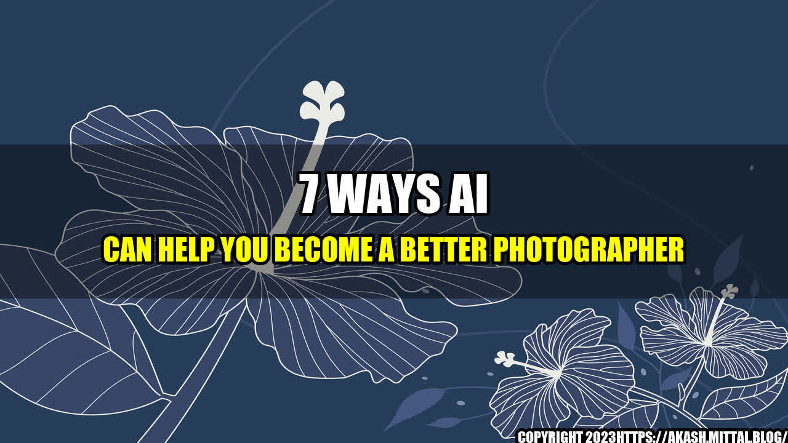

7 Ways AI Can Help You Become a Better Photographer

The Power of Artificial Intelligence in Photography
Have you ever wished to take perfect photos every time? To create stunning images like a pro photographer without years of training and experience? Artificial intelligence (AI) can make this dream come true! AI-powered tools can analyze the scene, suggest settings, and even apply creative post-processing effects, saving you time and effort while boosting the quality of your photos. In this article, we'll explore seven ways AI can help you become a better photographer, from composition and exposure to editing and sharing. Let's dive in!
1. Automatic Composition
AI can analyze the subject, background, and lighting conditions to suggest the best composition, framing, and rule of thirds for your photo. Tools like Adobe Sensei and Photolemur can even crop and straighten your images automatically, removing distracting elements and highlighting the main subject. This not only saves you time and hassle, but also improves the visual appeal and impact of your photos.

Credit: Adobe Sensei
2. Intelligent Exposure
AI can analyze the brightness, contrast, and color balance of your scene, and adjust the exposure settings accordingly to avoid underexposure or overexposure. This is especially useful in challenging lighting situations, such as high-contrast landscapes or low-light portraits. Tools like Skylum's Luminar and DxO's PhotoLab use AI algorithms to optimize the dynamic range and enhance the details of your images, delivering stunning results.

Credit: Skylum Luminar
3. Creative Editing
AI can help you unleash your creativity and experiment with new styles and effects. Tools like Prisma can transform your photos into artworks, using deep learning algorithms to emulate the style of famous painters and graphic designers. Other tools, like Topaz Labs' AI Gigapixel and ON1's AI Sky Replacement, can enhance the resolution and quality of your photos, or replace the sky with a more dramatic or realistic one. The possibilities are endless!

Credit: Prisma
4. Smart Searching
AI can help you find the right images for your projects and save you time and frustration. Tools like Google Photos and Adobe Stock use AI algorithms to tag, categorize, and search your photos based on keywords, faces, objects, colors, and more. This makes it easy to find specific photos or discover new ones that match your style or theme. You can also use AI-powered reverse image search engines to find the source or similar images of any photo online.

Credit: Google Photos
5. Personalized Feedback
AI can help you improve your photography skills by providing personalized feedback and suggestions based on your goals and preferences. Tools like Adobe Lightroom, Google Photos, and EyeEm Vision analyze your photos and give you insights on the composition, exposure, focus, and other aspects of your images. They can also suggest creative challenges and inspirational photos to help you practice and learn new techniques. This feedback is invaluable for anyone who wants to grow as a photographer.

Credit: Adobe Lightroom
6. Seamless Sharing
AI can help you share your photos with the world and reach a wider audience. Tools like Google Photos, Adobe Portfolio, and EyeEm Market use AI algorithms to optimize your photos for different platforms, formats, and resolutions, and suggest the best tags, descriptions, and categories for your images. This not only saves you time and effort, but also helps you get discovered by potential clients or fans who appreciate your style and vision.

Credit: EyeEm Market
7. Future Enhancements
AI is still in its early stages in photography, but it holds great promise for the future. As AI algorithms become more sophisticated and diverse, they can assist photographers in more ways, from real-time scene recognition and composition to 3D modeling and virtual reality. AI can also help tackle ethical issues in photography, such as copyright infringement, deepfake detection, and bias awareness. The possibilities are endless, and we can't wait to see how AI will revolutionize photography in the years to come!

Credit: HUAWEI P40 Pro
Conclusion
As we've seen, AI can help you become a better photographer by providing automatic composition, intelligent exposure, creative editing, smart searching, personalized feedback, seamless sharing, and future enhancements. By leveraging AI tools and algorithms, you can save time, enhance the quality, and unleash your creativity, and take your photography skills to the next level. So don't be afraid to experiment and explore the world of AI-powered photography!
Curated by Team Akash.Mittal.Blog
Share on Twitter Share on LinkedIn